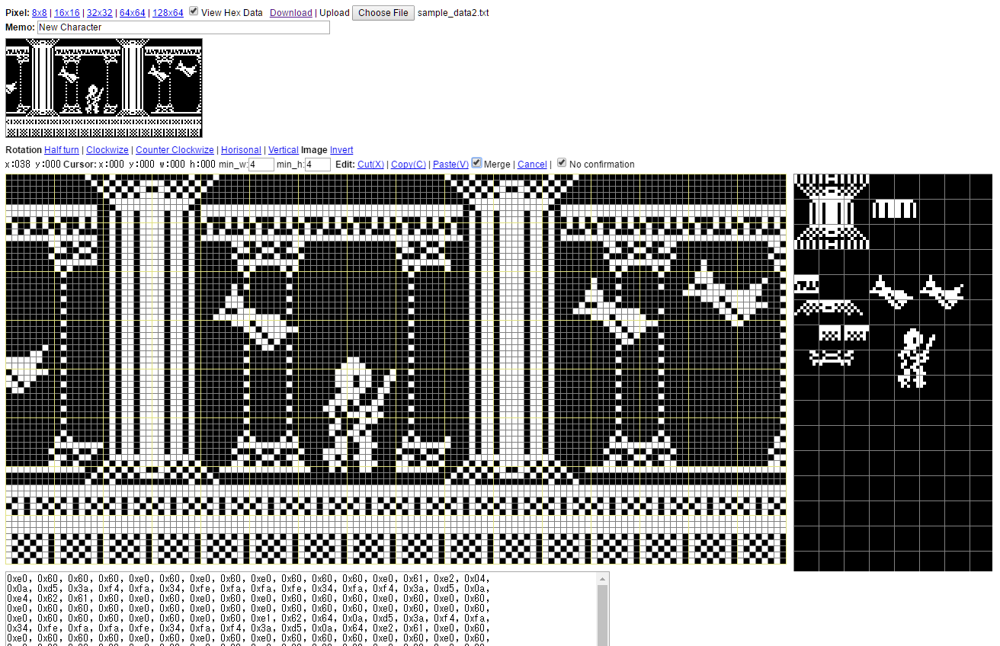
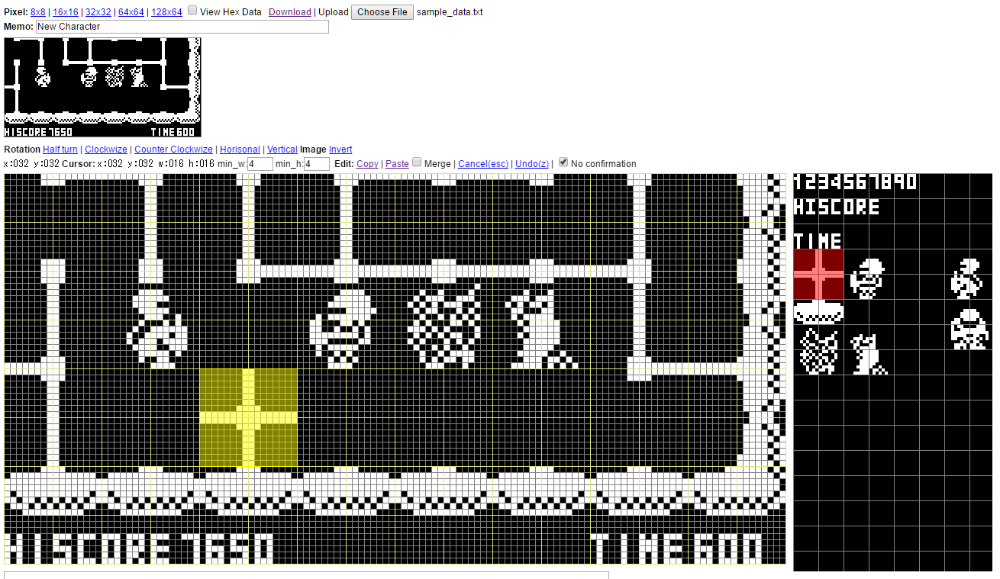

Arduboy Web-based bitmap editor
Demo
- Source code
https://github.com/emutyworks/BitmapEditor
- Community article
http://community.arduboy.com/t/web-based-bitmap-editor/1704
- Welcome new developer. List of development document and article
http://community.arduboy.com/t/welcome-new-developer-list-of-development-document-and-article/1857
- To-do List
- Map editer
- Animating editer
Screenshot:


Copyright (c) 2016 emutyworks
http://community.arduboy.com/users/emutyworks/activity